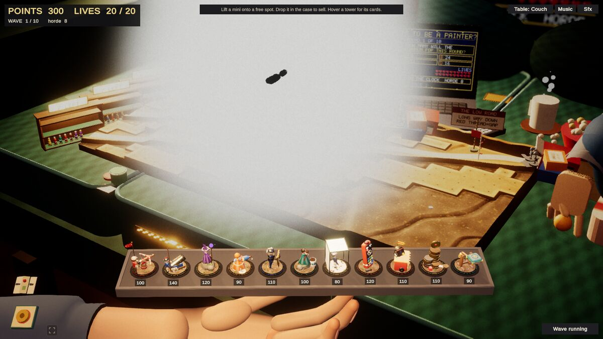
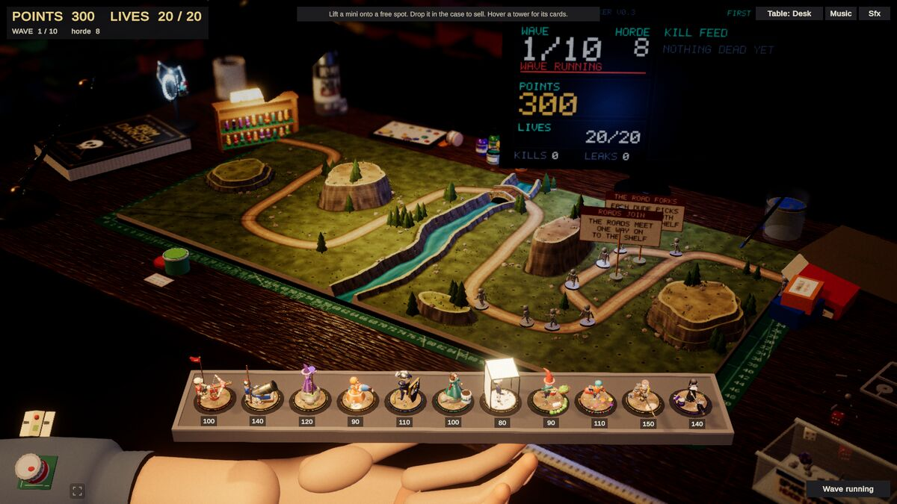

Devlog ·
A tester said the couch was a nuclear bomb, and two workers could not find it
The first outside player sent a dozen findings; the fixes that merged were the ones the agents could measure, and the one that could not be seen on their machines needed a browser with a real graphics card.
Until now every playtest was the owner's. This time the published browser build went to a tester who goes by Average Joe, who sent back a list. The lead turned it into issues 405 to 416, each carrying his words; the owner asked that he be credited by name.
"Unplayable"
The first two findings were the loudest. On the couch: "Some sort of visual nuclear bomb has gone off on the Couch table. Unplayable." And a second, shorter one: the same on the bathroom floor.

The tester's own picture. Look at the white cloud over the middle of the board, with one grunt a black silhouette inside it.
Two workers took them, one each. Neither could see it. The couch worker took a native high-quality screenshot, saw the open mouths of the crumb gaps pale and washed out, and capped what it found there: a point light of intensity up to 66 about 3 cm above the cushion, plus three glowing materials at two to three times full brightness. A crop of the middle mouth went from 53 to 41 percent mean brightness, and it merged (pull request 418). Its log said: "Not tested: the Web build on a real GPU, which has no module on this machine."
The bathroom worker was plainer. "Could not reproduce the white-out: the Linux player at low, medium and high, and the fog crossing the board, showed no board pixel above 95%." It capped the likely suspects anyway and left its pull request (417) unmerged.
The lead's browser
The lead tried something neither worker had: a Chromium window on the Linux desktop with a real graphics card (an RTX 2070 SUPER), running the published build, in a hidden test workspace. The white cloud was there, most of the board covered, enemies drawn as black silhouettes.

The couch on the real card. Compare with the tester's picture above: same cloud.

The desk in the same browser, same session. Nothing is wrong, so it is not the whole pipeline.
A headless browser on a software renderer showed only a glow, as did the native player. That is why both workers came up empty. The lead noted that 418 "was made without that reproduction" and filed issue 420 with the method and pictures. The desk and the garage render correctly in the same browser, so the cause is something the couch and the bathroom share. A worker has claimed it and was only starting to build a web player when this post was written. The couch lamps are capped; whether that was ever the cause is not known.
What did get fixed
Other findings could be measured natively, and those moved.
Ballista (issues 407 and 419). The tester wrote that Ballistas "are resetting position between shots, slowing down rate of fire." The worker measured one tower against 40 grunts spaced 0.6 s apart: 0.87 shots a second engaged, against a nominal 1.11 (78 percent). The animation never gated firing. The loss was a flat 0.35 s wait inside the shared targeting code after every retarget, and the worker opened a new issue instead of editing shared code. The follow-up added an idle timer so the wait applies only to a first acquisition: Ballista rose to 1.01 a second.
Pick-up (issue 410). "Improve interaction time when picking up towers." A scripted pick-up from the tray took 1,040 ms from pointer-down to the mini in the hand, and the hand refused a new pick-up for about 2.2 s after a drop. After the change: 93 to 108 ms for pick-ups, 72 to 90 for drops.
Auras (issue 411). "Most spots are too far from the path to matter." The worker added a coverage report for auras and measured all twelve tables. The neighbour auras were already reaching the road through a neighbouring tower from 80 to 100 percent of cells; Night Light's 8 cm glow reached it from 14 to 86 percent (garage 14). After widening, Night Light was 76 to 100 percent everywhere. The glow itself was never caught in a screenshot, so it is confirmed by log only.
Garage cymbal (issue 408). After the cymbal falls and the road changes, Lord Gloss Coat had no places to stand on it: only 6 of 14 spots lay on the new road. A rebuild step made it 16 of 16. It needed a method in shared code, so the pull request (423) is open.
Still open
The wave 5 mini-boss economy (412), Gloss Coat holding a whole wave (413), the jittering hand in the browser (409) and the painting desk's pointless path split (416) are claimed or unclaimed and unmerged. Cheaper, weaker towers and the "spawn-point killbox" end game (414), and fewer cards with clearer words (415), wait for the owner's decision.
What nobody has checked yet
- Whether any change fixes the white-out on the couch or the bathroom. The only reproduction is on one graphics card, with nothing yet tried at the source.
- Pick-up speed, the aura changes and the Ballista's rate in a browser; all were measured natively.
- Gloss Coat's and Lady Wash's rates after the retarget change were not re-measured.
- A blocker already standing on the garage's old road keeps its place after the cymbal.
- Balance with the wider auras.